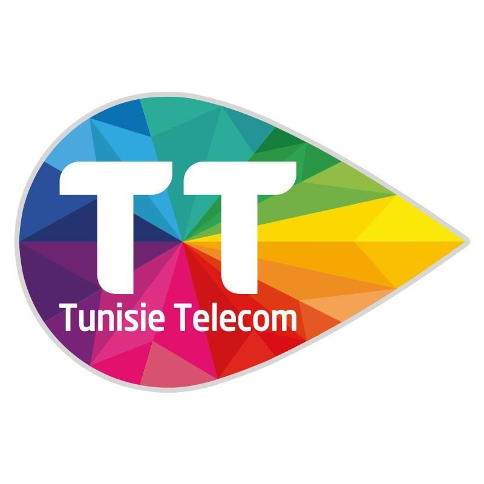

Parcours professionnel
Mon expérience
Quatre ans d'expériences terrain en support informatique, commerce et gestion de données — de la maintenance hardware au développement d'applications.
Technicien de Maintenance Informatique
WonderTech Services
- Réparation et maintenance des ordinateurs (hardware et software)
- Assistance aux utilisateurs (support niveau 1 & 2) : gestion des incidents, prise en charge des demandes de services, accompagnement et conseil optimisés
- Gouvernance du système d'information : accompagnement et conseil dans la conduite de projets
- Gestion des comptes utilisateurs (création, droits d'accès, suppression)
- Suivi et résolution des incidents techniques, diagnostic et dépannage (correctif et préventif)
- Développement de sites web vitrine et e-commerce
- Développement d'applications mobiles (Android/iOS)
- Installation des matériels et postes clients, paramétrage de logiciels
- Réalisation de l'inventaire du matériel sous logiciel de gestion de parc

Caissier & Responsable Commercial
Tunisie Telecom — Agence Commerciale
- Élaboration et mise en œuvre de stratégies commerciales pour augmenter le chiffre d'affaires
- Gestion d'une équipe de vente, avec un accent sur la formation et le développement des compétences
- Analyse des tendances du marché et des besoins des clients pour adapter l'offre de services
- Création et entretien de relations stratégiques avec les partenaires et clients clés
- Suivi des performances commerciales et optimisation des résultats
- Résolution des problèmes clients, prospection et argumentation commerciale
- Marketing terrain et porte-à-porte

Technicien Maintenance Informatique
Proximedia Informatique
- Maintenance préventive et corrective du matériel informatique pour garantir un fonctionnement optimal
- Diagnostic et résolution des incidents techniques, avec un support de qualité aux utilisateurs
- Installation et configuration de systèmes d'exploitation et de logiciels adaptés aux besoins des clients
- Réparation des ordinateurs
- Développement web
Gestionnaire de Base de Données
Tunisie Telecom — Agence Centrale
- Gestion et optimisation des bases de données, garantissant l'intégrité et la sécurité des données
- Analyse et traitement des données pour produire des rapports stratégiques destinés aux équipes décisionnelles
- Surveillance des performances des bases de données et amélioration continue
- Formation et support technique aux utilisateurs
- Validation de données clients et réactivation de cartes SIM
- Coordination avec les équipes commerciales